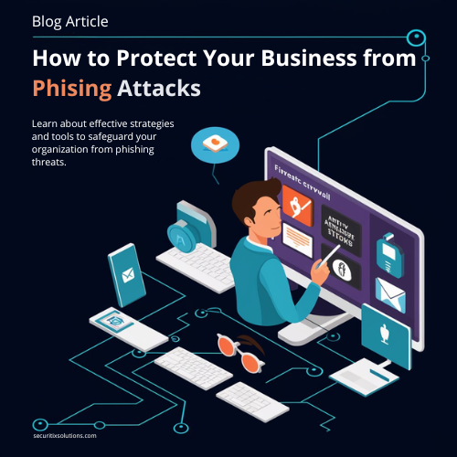

How to Protect Your Business from Phishing Attacks
Phishing attacks are one of the most common and dangerous cyber threats businesses face today. This article provides comprehensive strategies to protect your business from phishing attacks and ensure your employees are prepared to recognize and avoid these threats.
Understanding Phishing Attacks
Phishing attacks involve cybercriminals sending deceptive emails or messages designed to trick recipients into revealing sensitive information, such as passwords or financial details, or installing malicious software. These attacks can lead to significant data breaches and financial losses.
Why Phishing Attacks are a Major Threat
Phishing attacks exploit human vulnerabilities, making them particularly challenging to prevent. Cybercriminals use sophisticated techniques to create convincing fake emails and websites, making it easy for unsuspecting employees to fall victim.
Real-World Examples
- Google and Facebook (2013-2015): Both companies were scammed out of $100 million through a sophisticated phishing attack where the attacker impersonated a hardware vendor.
- Sony Pictures (2014): Phishing emails targeted employees, leading to a massive data breach that exposed sensitive company information.
- Ubiquiti Networks (2015): The company lost $46.7 million to a phishing scam where attackers impersonated company executives to request fund transfers.
Strategies to Protect Your Business from Phishing Attacks
- Employee Training and Awareness: Regularly train employees to recognize phishing emails and the tactics used by cybercriminals. Use simulated phishing exercises to test their knowledge and preparedness.
- Implement Strong Email Security: Use email filtering solutions to detect and block phishing emails before they reach employees' inboxes. Ensure your email security system is updated regularly to adapt to new threats.
- Multi-Factor Authentication (MFA): Require MFA for accessing sensitive systems and data. This adds an extra layer of security, making it harder for attackers to gain access even if they obtain login credentials.
- Regularly Update Software: Keep all software, including email clients and security solutions, up to date to protect against vulnerabilities that can be exploited in phishing attacks.
- Establish Clear Reporting Procedures: Encourage employees to report suspicious emails and provide a clear procedure for doing so. Quickly investigate and respond to reported phishing attempts to mitigate potential damage.
- Use Secure Web Gateways: Implement secure web gateways to block access to malicious websites linked in phishing emails. This helps prevent employees from accidentally visiting harmful sites.
Expert Interview: Dr. Jane Mitchell, Cybersecurity Specialist
To gain deeper insights into the best practices for protecting businesses from phishing attacks, we spoke with Dr. Jane Mitchell, a leading cybersecurity specialist. Her advice underscores the importance of both technical defenses and continuous employee education.
Q: What is the most effective way to protect a business from phishing attacks?
Dr. Mitchell: "Continuous employee training combined with robust technical defenses is key. Employees need to be aware of the tactics used in phishing attacks, and organizations must implement strong email security measures to detect and block these threats."
Take Action: Anti-Phishing Checklist
- Conduct regular employee training and phishing simulations.
- Implement advanced email security solutions.
- Require multi-factor authentication for sensitive access.
- Keep software and security solutions updated.
- Establish and communicate clear reporting procedures.
- Use secure web gateways to block malicious websites.
Exclusive Tools
Download our Anti-Phishing Checklist to help your business implement effective strategies against phishing attacks.
Conclusion
Protecting your business from phishing attacks requires a combination of employee education, robust security measures, and proactive monitoring. By following these strategies, you can significantly reduce the risk of falling victim to phishing scams and safeguard your business's sensitive information.